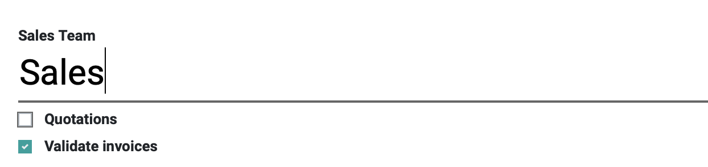

Automatic process pickings when sale orders are confirmed
Based on sales team
You can configure in different sales team to validate invoices on order confirm.

As a hook
If you want to do it for specific sale orders (Eg. Integration with another platform), you can add to context 'validate_invoices' when confirming the order.
Maintainers
This module is maintained by Blueorange Group.
Blueorange Group is a software company based on Argentina working with software projects worlwide, with main focus on the entire lifecycle of software and long-term relationships with their customers.